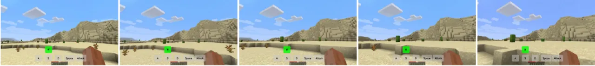
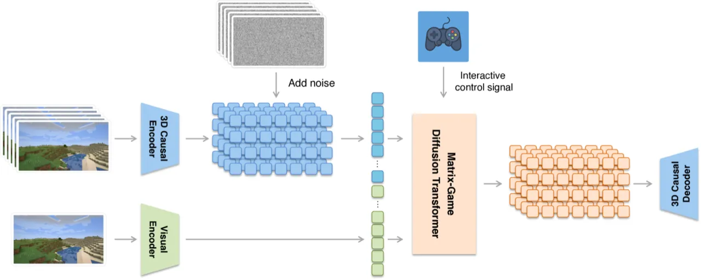
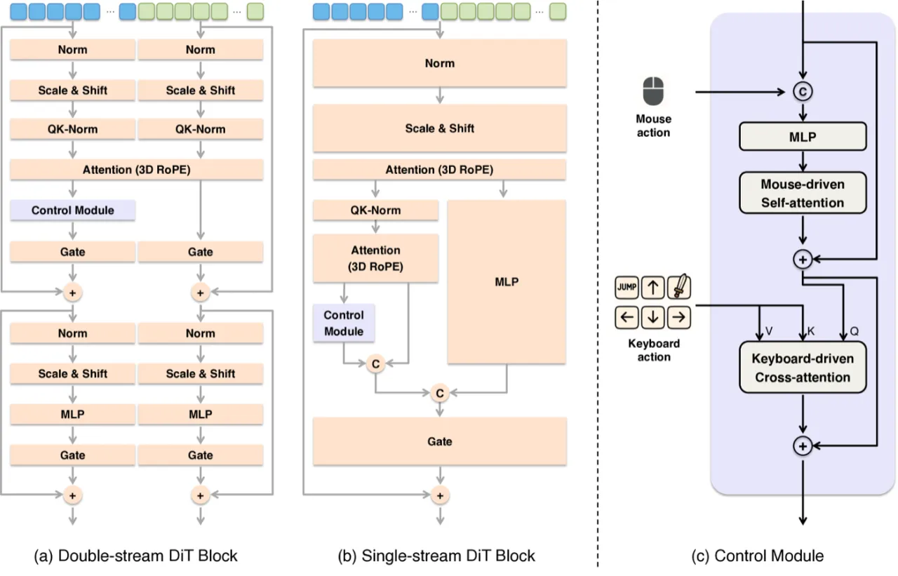
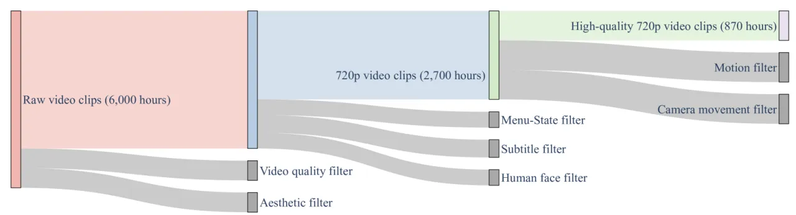
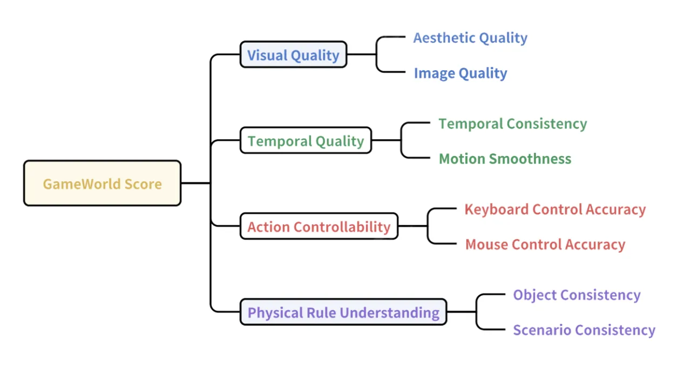
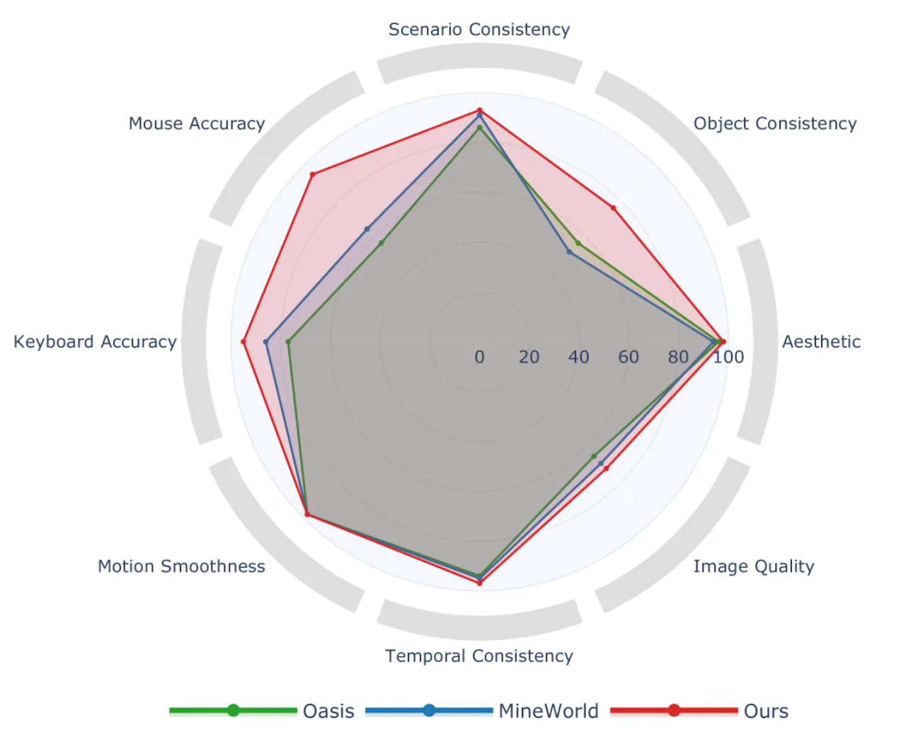
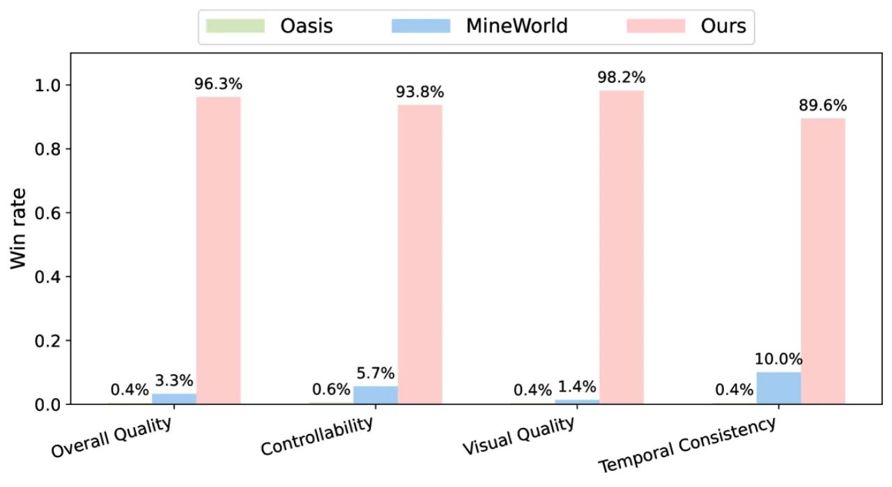

Matrix-Game 是一个面向可交互游戏世界生成的基础模型，通过两阶段训练——先在 2,700 小时无标注 Minecraft 视频上进行大规模预训练，再用 1,200 小时精标动作数据微调——实现了对角色动作（键盘）和摄像机（鼠标）的精确帧级控制，同时保持高视觉质量与时序一致性。
世界模型是智能体感知、模拟和推理环境动态的核心。然而，现有可交互视频生成方法面临三重瓶颈：数据匮乏（精标动作视频采集昂贵）、物理动态难以建模（细粒度时序可控性不足）、以及评测标准缺失（缺乏客观比较的统一基准）。
"Interactive video datasets with rich annotations (e.g., precise actions, camera movement) are scarce and expensive to collect, especially at scale."

与 Oasis 和 MineWorld 等已有开源世界模型相比，Matrix-Game 在可控性（keyboard / mouse accuracy）和物理一致性（object consistency）上取得显著提升，同时维持高视觉质量与时序流畅度。
Matrix-Game 采用 image-to-world 范式：以单帧图像为条件，通过 3D Causal VAE 压缩时空信息，再由 Multi-Modal Diffusion Transformer (MMDiT) 生成动作条件视频，并借助自回归策略实现长时程连续生成。

Stage 1 — 无标注视频预训练：在 2,700 小时 720p Minecraft 原始视频上进行大规模预训练，帮助模型习得场景外观、物理规律与时序动态。原始数据经三级分层过滤（视频质量评估 → 菜单/字幕/人脸清除 → 运动模糊过滤），最终保留 870 小时高质量子集。支持变长帧数（17 / 33 / 65 帧）与多种宽高比（16:9 / 4:3 / 21:9）。
Stage 2 — 精标动作微调：在 1,200 小时带精确键盘 + 鼠标标注的视频上进行监督训练，使模型能精确响应帧级动作控制信号。标注数据来源于 MineRL 智能体自主探索（VPT 模型，16Hz 采样）和 Unreal 程序化仿真两条管线，覆盖 14 种生物群系，每类占比 4–7%，保证语义多样性。
Matrix-Game 支持两类控制信号：

为突破单次生成固定帧长的限制，模型采用自回归策略：每个生成片段末尾的 k=5 帧 latent 与下一段 noisy latent 在 channel 维度拼接，并附 binary mask 指示有效运动帧。同时以 0.2 概率向 motion frame 添加 Gaussian noise、以 0.25 概率将其替换为零 latent（classifier-free guidance），从而抑制误差累积并提升长时稳定性。

作者提出 GameWorld Score——一个覆盖 4 大支柱、8 个维度的统一评测基准，并在该基准上与 Oasis 和 MineWorld 进行全面对比，同时进行人类双盲评测。

| 指标 Metric | Oasis | MineWorld | Matrix-Game |
|---|---|---|---|
| Image Quality | 0.65 | 0.69 | 0.72 |
| Aesthetic | 0.48 | 0.47 | 0.49 |
| Temporal Consistency | 0.94 | 0.95 | 0.97 |
| Motion Smoothness | 0.98 | 0.98 | 0.98 |
| Keyboard Accuracy | 0.77 | 0.86 | 0.95 |
| Mouse Accuracy | 0.56 | 0.64 | 0.95 |
| Object Consistency | 0.56 | 0.51 | 0.76 |
| Scenario Consistency | 0.86 | 0.92 | 0.93 |
Matrix-Game 在全部 8 个维度均超过 Oasis 和 MineWorld，尤其在可控性（Keyboard Accuracy: 0.95 vs 0.77 / 0.86；Mouse Accuracy: 0.95 vs 0.56 / 0.64）和物理一致性（Object Consistency: 0.76 vs 0.56 / 0.51）方面优势显著。
| 动作 Action | Oasis | MineWorld | Matrix-Game |
|---|---|---|---|
| Forward | 0.85 | 0.86 | 0.99 |
| Left | 0.80 | 0.87 | 0.92 |
| Right | 0.79 | 0.88 | 0.96 |
| Jump | 0.77 | 0.82 | 0.88 |


模型在 8 种 Minecraft 生物群系（beach、desert、forest、hills、icy、mushroom、plains、river）上进行测试。论文指出："Our model consistently outperforms existing open-source baselines...across all eight scenarios."。键盘动作 IDM（Inverse Dynamics Model）分类准确率为 90.6%，鼠标运动回归 R² 达 0.97，验证了评测指标的可靠性。
"The model may occasionally struggle with precise controllability or spatial consistency in rare biomes or edge cases, typically due to insufficient data coverage."——在数据覆盖不足的罕见生物群系或极端场景下，模型偶尔出现可控性下降或空间一致性问题。
"There is still room to further enhance its understanding of physical dynamics, particularly in interactions such as object collisions or terrain traversal"——对于物体碰撞、穿越特定地形（如树叶）等涉及精细物理交互的场景，模型仍可能出现穿模或物理错误（如角色走过树叶时不符合物理规律）。
当前鼠标控制范围有限（每帧最大 15° 偏转），键盘动作空间也未覆盖 Minecraft 全部操作。模型目前仅在 Minecraft 场景训练，作者将扩展至 Black Myth: Wukong、赛车模拟器、CS:GO 等复杂游戏作为未来工作。
自回归生成策略虽通过 Gaussian noise augmentation 和 CFG 缓解了时序漂移，但长时程视频（多段自回归）仍面临误差累积风险。论文将引入更长 motion context 或基于记忆机制的方案列为未来工作。